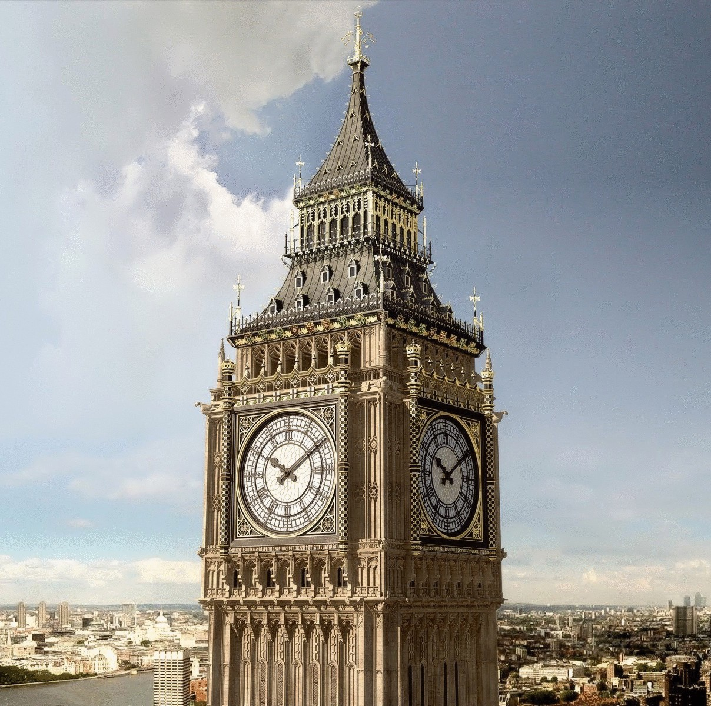

The Time lives in clocks. The clocks live in the Clockarium!
|

Биг-Бен (англ. Big Ben) — популярное туристическое название часовой башни Вестминстерского дворца. Официальное название башни с 2011 года — Башня Елизаветы (англ. Elizabeth Tower). На данный момент часы Биг-Бена реставрируются до 2020 года. Изначально «Биг-Бен» являлось названием самого большого из шести колоколов, однако часто это название по ошибке относят и к часам, и к самой часовой башне в целом. На момент отливки Биг-Бен был самым большим и тяжёлым (13,7 тонны) колоколом Соединённого Королевства. В 1881 году уступил первенство колоколу Большой Пол (17 тонн). Считается, что колокол получил имя Биг-Бен (Большой Бен) в честь сэра Бенджамина Холла, куратора строительных работ. Согласно другой версии, он назван в честь Бенджамина Каунта, популярного боксёра в тяжелом весе. Официальным наименованием до сентября 2012 года было «Часовая башня Вестминстерского дворца», в прессе её нередко называли Башней св. Стефана. По решению британского парламента переименована в Башню Елизаветы, в честь 60-летия правления королевы Елизаветы II. Башня возведена по проекту английского архитектора Огастеса Пьюджина в неоготическом стиле в 1859 году, башенные часы запущены 31 мая 1859 года. Высота башни, включая шпиль — 96 метров (315 футов от основания до шпиля, источники называют также 316 футов — 96,3 м — от верхней отметки уровня воды (англ. THWM и 320 футов). Нижняя часть часового механизма располагается на высоте 55 метров. Наклон башни к северо-западу составляет 0,26 градуса; отклонение от вертикали: 43,5 сантиметра. Отнести к падающим можно сугубо условно, но сказать, что «башня совсем не отклонена» тоже нельзя. Большие часы Вестминстера являются третьими по размеру в мире (после часов Абрадж аль-Бейт и Ратуши Миннеаполиса) четырёхсторонними часами с боем. Спроектировали часы сэр Эдмунд Бекетт и королевский астроном Джордж Эйри. Создание часов было поручено часовых дел мастеру Эдварду Джону Денту, после смерти которого в 1853 году строительство возглавил его приёмный сын Фредерик Дент. Фредерик завершил работу в 1854 году. Маятник часов установлен внутри ветронепроницаемой коробки, расположенной ниже комнаты с часовым механизмом. Его длина составляет 4 метра, вес — 300 кг. Ход маятника составляет 2 секунды. Точность хода часов регулируется с помощью монет, которые кладут на маятник: старая (додесятичная) монета в 1 пенни ускоряет его движение на 0,4 секунды в сутки. Общий вес часового механизма — 5 тонн. Диаметр циферблата — 7 метров. Длина стрелок — 2,7 и 4,2 метра. В основании каждого из четырёх циферблатов часов располагается латинская надпись «Domine Salvam fac Reginam nostram Victoriam primam» («Боже, храни нашу королеву Викторию Первую»). По периметру башни, справа и слева от часов, находится другая фраза на латыни — «Laus Deo» («Слава Богу» или «Хвала Господу») 27 июля 2012 года с 8:12 до 8:15 часы пробили 30 раз в честь открытия XXX Олимпийских игр. Впервые с 1952 года куранты работали вне расписания. 21 августа 2017 года в 12:00 часы прозвучали в последний раз перед большой реставрацией башни, которую планируют закончить к 2021 году. До этого колокол не прекращал отбивать время с момента её создания, не считая реставрации 1983—1985 годов и планового ремонта в 2007 году. Башня Елизаветы — один из самых узнаваемых символов Великобритании, часто используемый в сувенирах, рекламе, кинофильмах. The Great Clock of Westminster The Clock Tower of the Palace of Westminster, colloquially known as "Big Ben", in Westminster, London, England. The Palace of Westminster, Big Ben and Westminster Bridge London skyline with Big Ben and environs, including the London Eye, Portcullis House, Parliament Square, and St Margaret's Church The dial of the Great Clock of Westminster. The hour hand is 9 feet (2.7 m) long and the minute hand is 14 feet (4.3 m) long. The south clock face being cleaned on 11 August 2007 Double-decker buses frame a busy Whitehall with Big Ben in the background. Scaffolding was put up in 2017. |
||||||||||||||||||

Виды часов
⚜
Самые известные часы в мире
⚜
Самые удивительные часы
⚜
Часы своими руками
⚜
Produced by Yashin Grigory, 2019